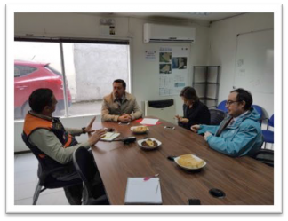

Acta de Reunión # 2
Imágenes de la reunión Fecha: 12, octubre del 2016

Asunto: Mesa de Trabajo - Presencial
Participantes:
Cristian López, Gobernador
Carolina Vásquez, Jefa Gabinete
Cristian Cortés, Jefe Modernizacion
Lorits Hernández, E. Emergencia
Anibal Contreras, Jefe Proyecto MCI
Objetivo de la reunión:
Gobernación confirmará los objetivos generales y validará los requerimientos.
Temas tratados:
Se presentó ejemplos de las plataformas
311 como línea base para el desarrollo y adopción de buenas prácticas en la aplicación CooperaNet.
Se solicitaron antecedentes gráficos y contenidos para el desarrollo.
Acuerdos:
Utilizar las plataformas de 311 como base para el desarrollo de CooperaNet.
Utilizar el Chat Telegram y no Whatsapp por su capacidad de integración para las notificaciones.
www.MiCiudadInteligente.com | contacto@miciudadinteligente.com | +56968554901